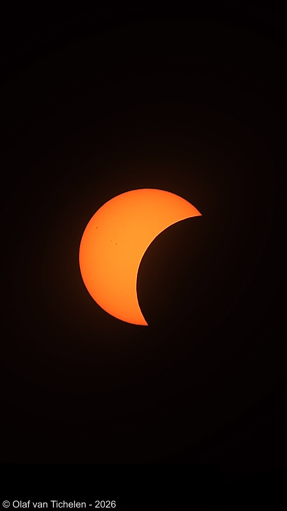
Image of the sun. Taken on August 12th, 2026.
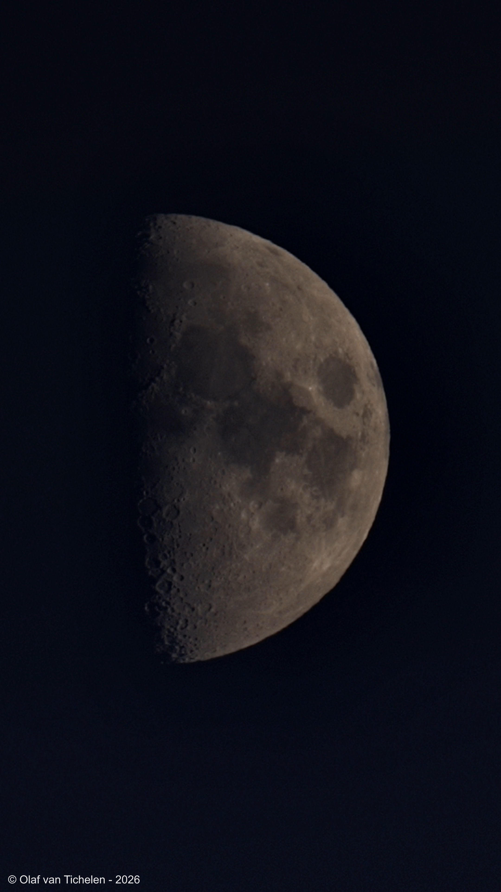
Image of the moon. Taken on August 20th, 2026.
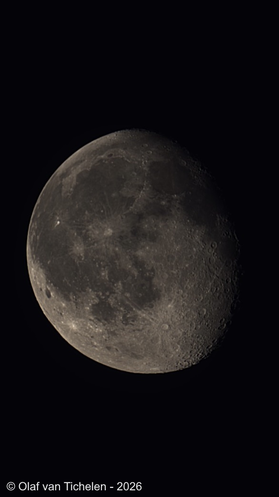
Image of the moon. Taken on September 1st, 2026.
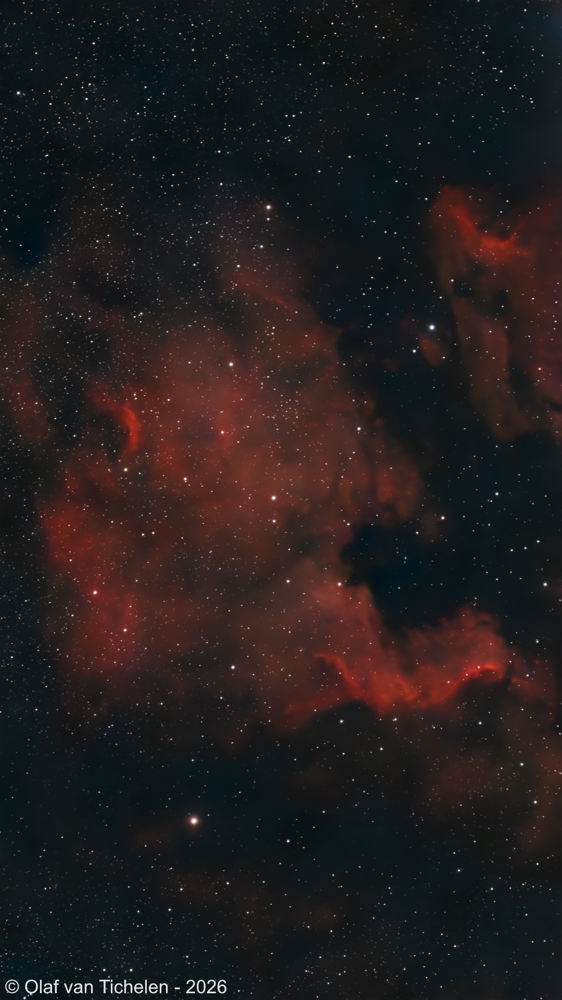
Image of the North America Nebula (NGC 7000). Taken on September 5th, 2026.
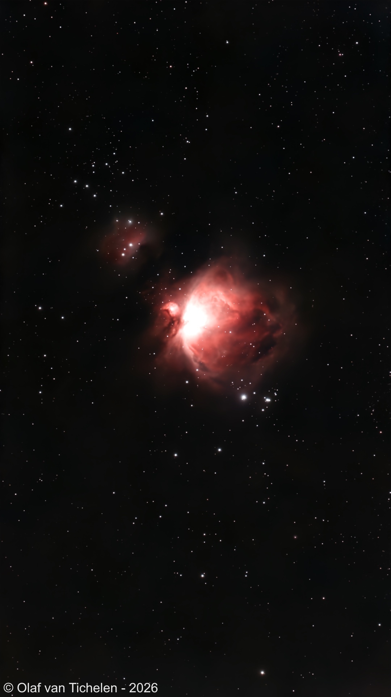
Image of the Orion Nebula. Taken on September 15th, 2026.
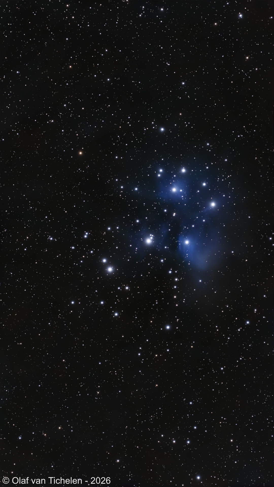
Image of the Pleiades. Taken on September 15th, 2026.
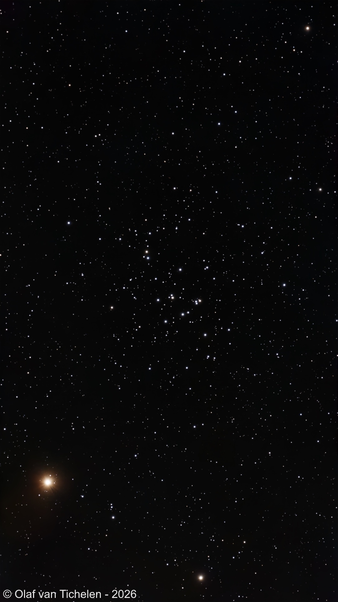
Image of the Beehive Cluster. Taken on October 14th, 2026.
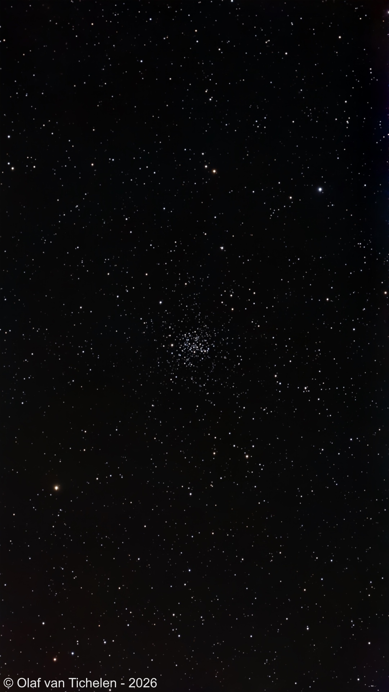
Image of the Golden Eye Cluster. Taken on October 14th, 2026.
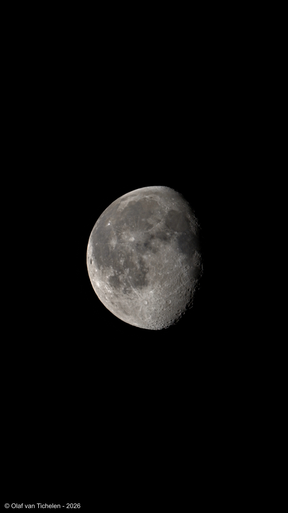
Image of the moon. Taken on October 29th, 2026.

Image of the Andromeda Galaxy. Taken on October 30th, 2026.
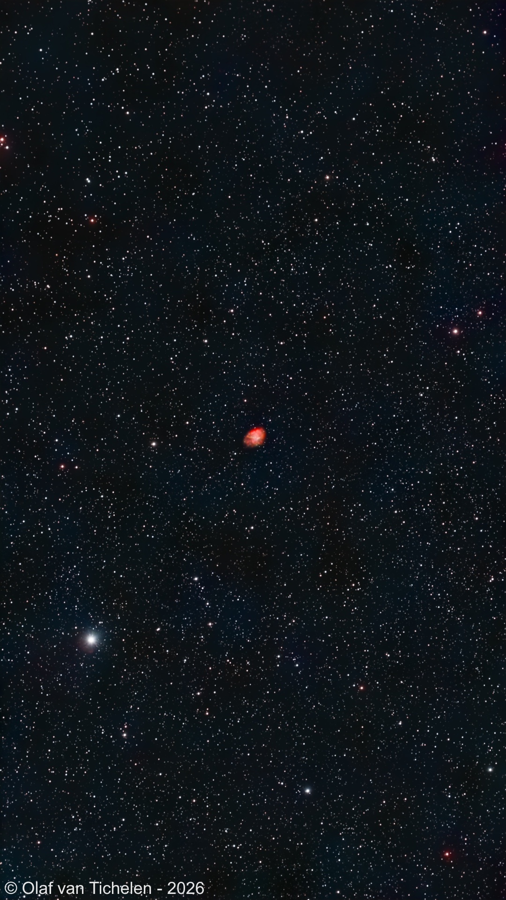
Image of the Crab Nebula. Taken on November 5th, 2026.
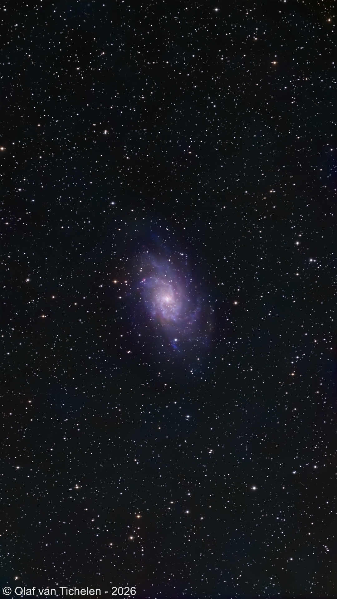
Image of the Triangulum Galaxy. Taken on November 5th, 2026.
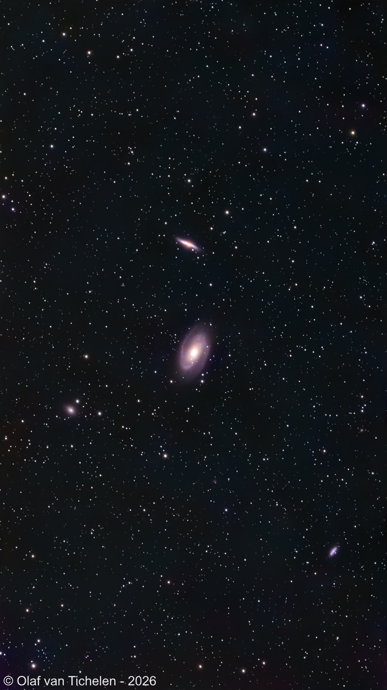
Image of Bode's Galaxy. Taken on November 5th, 2026.
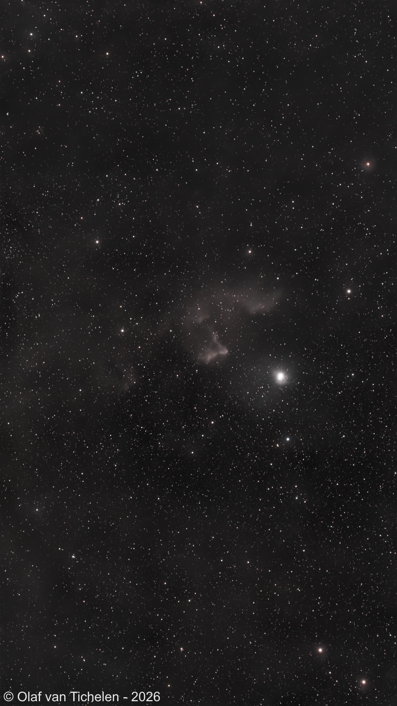
Image of the Ghost Nebula. Taken on November 13th, 2026.
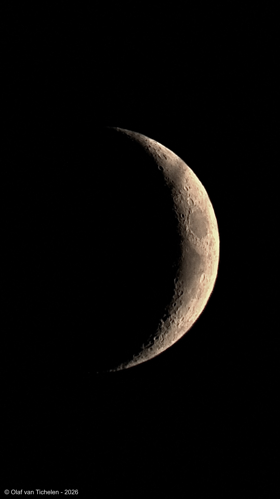
Image of the moon. Taken on November 13th, 2026.
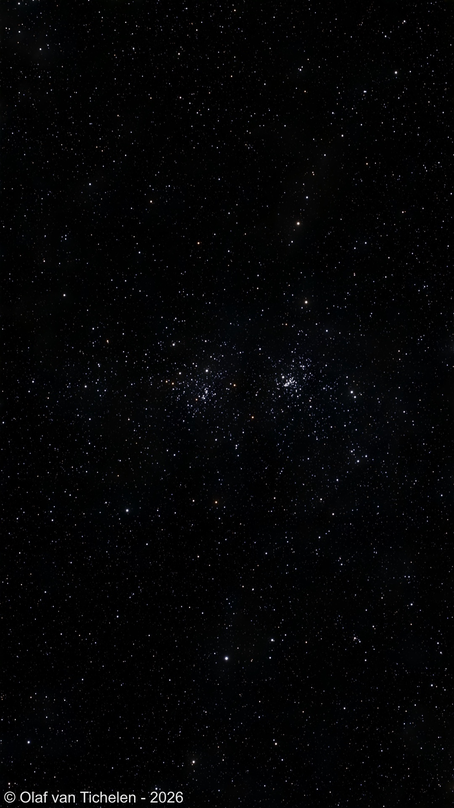
Image of NGC 869 (left) and NGC 884 (right). Taken on November 13th, 2026.
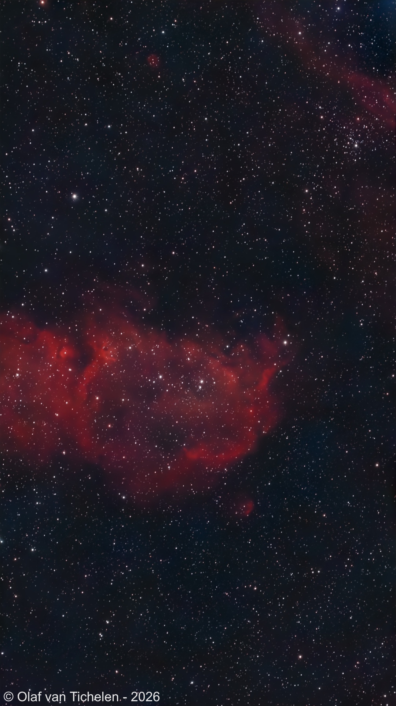
Image of the Soul Nebula. Taken on November 14th, 2026.
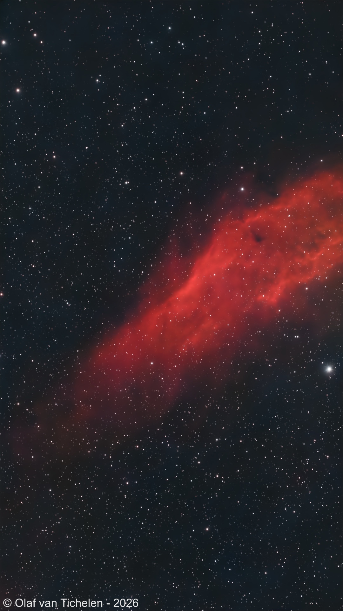
Image of the California Nebula. Taken on November 14th, 2026.